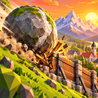

Hillguard
Offline physics puzzle: build a wall, stop the rolling boulder, save the village.
Support
Something not working, or an idea for the game? Write to kanadawhot0a@gmail.com. Please say which phone or tablet you use and which level you were on.
Questions
- Do I need the internet?
- No. The whole game plays offline.
- Where is my progress saved?
- Only on your device. Deleting the game deletes it; your device's own backup can bring it back with the game.
- How do I change the language?
- Tap the globe on the title screen or the map. The game speaks English, Türkçe, Deutsch, Español, Português, 日本語, 한국어 and العربية.
- The game feels slow or hot.
- Tap the quality button on the title screen and choose Medium or Low.
Destek
Bir şey çalışmıyor mu, ya da oyun için bir fikrin mi var? kanadawhot0a@gmail.com adresine yaz; hangi telefonu ya da tableti kullandığını ve hangi bölümde olduğunu da belirt.
- İnternet gerekir mi?
- Hayır. Oyunun tamamı internetsiz oynanır.
- İlerlemem nerede saklanıyor?
- Yalnızca cihazında. Oyunu silmek ilerlemeyi de siler; cihazının yedeği oyunla birlikte geri getirebilir.
- Dili nasıl değiştiririm?
- Başlık ekranında ya da haritada dünya simgesine dokun.
- Oyun yavaş ya da telefon ısınıyor.
- Başlık ekranındaki kalite düğmesinden Orta veya Düşük'ü seç.